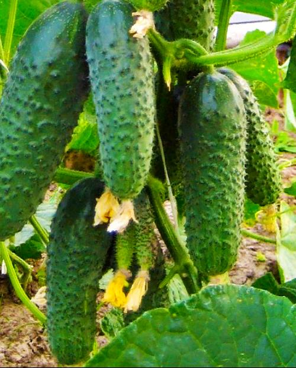
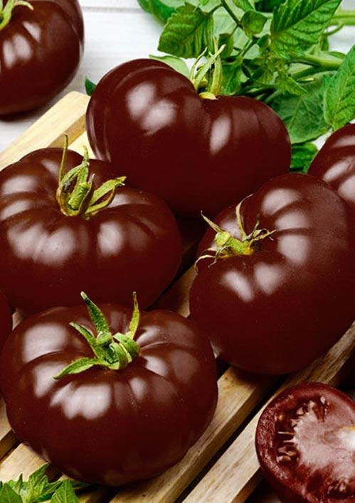
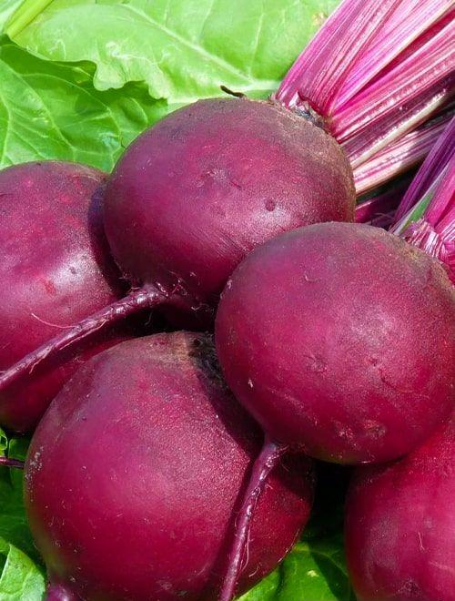
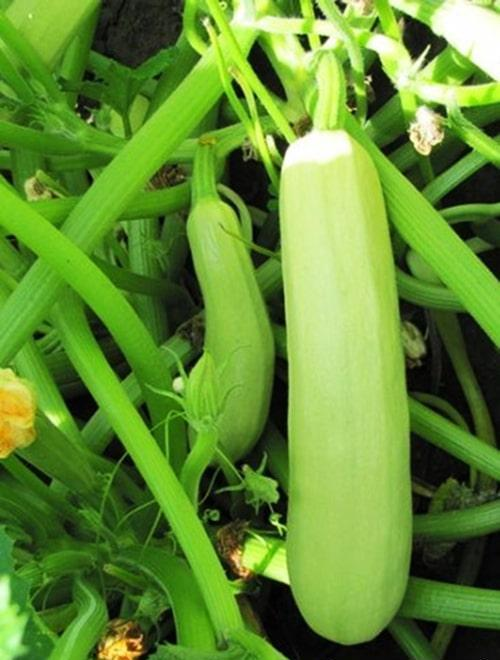
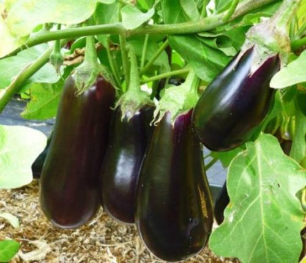
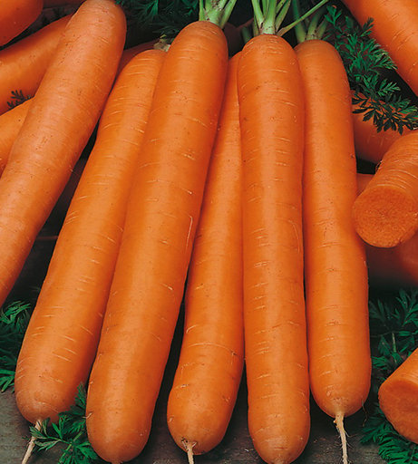
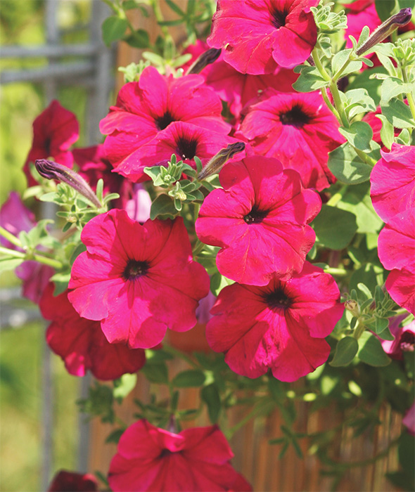
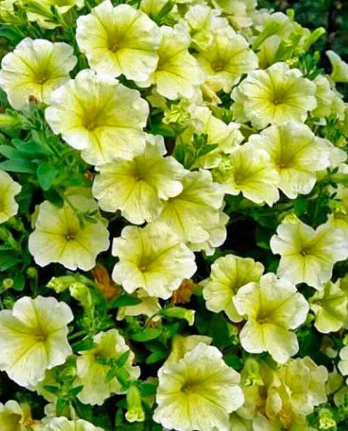

Огурец Кураж F1 относится к сильнорослым растениям, достигающим 50-120 см. У него образовывается от 2 до 6 завязей. Плоды у этого сорта небольшие, их длина 12-15 см, а вес около 110-130 г. Огурец покрыт тёмно-зелёной кожицей со светлыми продольными полосками. Его поверхность обильно покрыта мелкими шипами.

Высадку семян томата Черный Принц можно производить в открытый грунт. Рекомендуется выращивать без теплицы по 2-4 ствола, а в теплице по 1-2. Сорт среднего срока созревания, первые плоды появляются через 3,5 месяца. Один куст в среднем дает до 3 кг помидор. Мякоть мясистая, с приятным сладким вкусом, небольшой водянистостью. Вес каждого плода может достигать 300 гр, а их форма округлая и аккуратная. Следует отметить, что плоды не подходят для длительного хранения, так как проявляется склонность к растрескиванию. У растения есть иммунитет к фитофторозу, но профилактические меры игнорировать не рекомендуется.

Свекла "Червона Кула". Скороспелый (80-90 дней от всходов до технической спелости) сорт. Посев в грунт конец апреля – начало мая по схеме 15х30 см на глубину 2,0-2,5 см. Корнеплод округлой формы. Мякоть темно-красная, без колец. Масса корнеплода 350-400 г. Корнеплод легко выкапывается из почвы. Вкусовые качества хорошие. Сорт характеризуется выравненностью корнеплодов, стабильной урожайностью. Сорт устойчив к цветушности. Рекомендован для переработки и использования в свежем виде. Урожайность 6,0-7,0 кг/м2.

Данный сорт цуккини образуют раскидистые кусты. При соблюдении правильной агротехники, с одного квадратного метра можно получить более 8 килограммов овощей. Плоды имеют гладкую поверхность, беловато-зеленоватую или беловатую без вкраплений окраску, их кожица быстро окаменевает.

Растение средней высоты и раскидистой формы. Баклажаны сорта Мурзик овальные, среднего размера и фиолетового цвета. Кожица глянцевая, вес составляет от 290 до 330 грамм. Мякоть белая, плотная, без горечи. Сорт отличается хорошей завязываемостью плодов.

Основные характеристики сорта:
является среднеспелым – от образования всходов до созревания проходит 95-110 суток;
корнеплоды формы цилиндра с тупым концом, длиной до 22 см, яркой оранжево-красной окраски, весом 90-130 г;
вкус очень сладкий;
содержит много каротина;
с одного квадратного метра можно собрать до 4,2 кг урожая;
плоды прекрасно хранятся;
выращивается путем прямого посева в грунт.


Высаживают петунию Лавину пурпурную F1 в плодородный, легкий по своей структуре грунт. Растение развивается быстро, если обеспечить ему светлое, солнечное место и регулярный полив, с которым не стоит перебарщивать. Побеги петунии вырастают до 80см в длину. На протяжении всего теплого сезона они обильно покрываются пурпурно-белыми цветами, диаметром до 10см. Цветы оригинальны – их рисунок напоминает звезду, где темные пурпурные полосы перемежаются белоснежными.

Петуния Лавина Желтая. Данное растение относится к ампельным петуниям. Куст сам прямостоячий с длинными побегами. Это красивое светолюбивое растение ярких и пастельных тонов, имеющее достаточно крупный цветок диаметром около 9 см. Очень сильно любят солнце и светло. Прекрасно подходят для кашпо, подвесных ящиков и т.д. Посев происходит с января месяца по март. Само же цветение, отличающиеся огромной пышностью, длится в период с апреля и до самых первых заморозков.

Астра Королевский размер. Куст этого растения густой и ветвистый. Соцветия астры Королевский размер смесь красок являются пышными, махровыми и имеют крупную полусферическую форму с диаметром до 12 см. Высота куста может достигать от 50 до 80 см. Астра цветет примерно с июня по октябрь. Растение предпочитает открытое солнечное место, но также может произрастать в условиях полутени.

Гвоздика Шабо Дионис. Смесь нежных расцветок классической срезочной гвоздики. Формирует красивые кусты около 60 см высотой с декоративной сизой листвой. Прочные цветоносы увенчаны крупными, густо-махровыми цветками безупречной формы, до 6 см в диаметре. Цветки обладают чудесным ароматом. Срезка стойкая, долго сохраняет свежесть в воде. Растения неприхотливые, холодостойкие (выносят заморозки до -3°С), светолюбивые, засухоустойчивые. Цветущие кусты отлично выглядят в садовых цветниках, подходят для выращивания в контейнерах.

Шток-роза "Виолет" - классические садовые гиганты. Стебель мощный, ветвистый, высотой до 2 м. Крупные бархатистые махровые цветки сине-фиолетовой окраски собраны в длинные кистевидные соцветия. Цветет в июле-сентябре. Используются для небольших групп на газоне, миксбордеров,декорирования стен,заборов и на срезку. Срезанные стебли в стадии бутонов распускаются в воде.

Низкорослый однолетний сорт бархатцев Болеро отличается золотисто-желтыми соцветиями диаметром до 10 см с красно-коричневыми краями. Растения имеют прямые и прочные стебли, высотой 25-30 см, с многочисленными боковыми побегами. Листья зеленые, разрезанные и зубчатые.